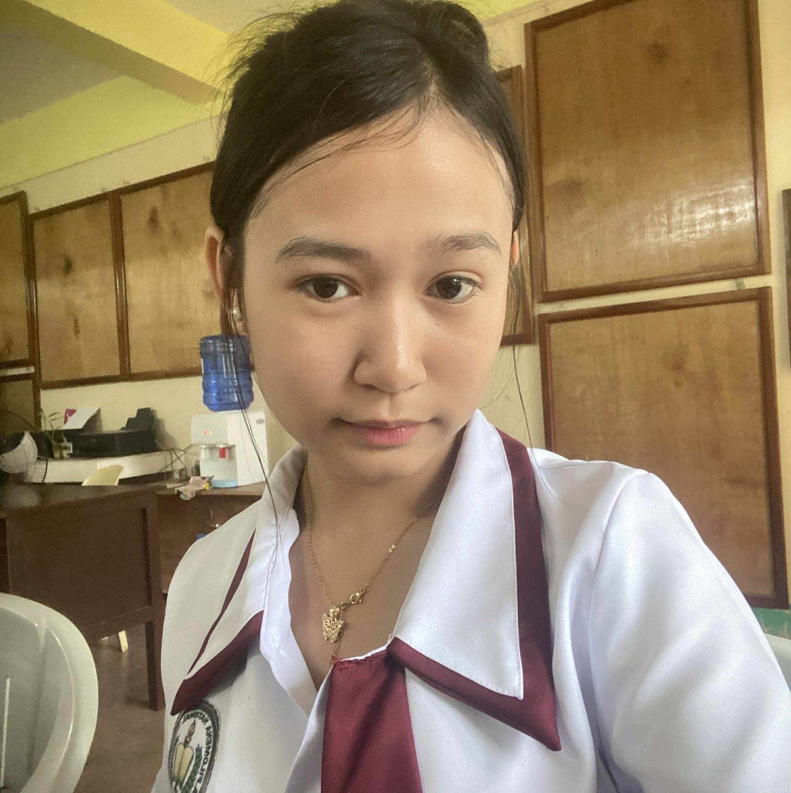

I enjoy learning new things, exploring technology, and sharing ideas with others. Welcome to my elegant personal webpage where you can know more about me and read our concept paper.

This page shares a little about who I am, the things I enjoy, and our concept paper project.
Hi! My name is Mylyn. I made this webpage to introduce myself in a simple and beautiful way. I love learning, growing, and discovering new ideas that can inspire me in school and in life.
Click the button below to read our concept paper directly on this webpage.
Access to safe and clean drinking water remains a major global concern, as millions of people still lack reliable access to properly treated water. According to the World Health Organization, unsafe water contributes significantly to the spread of waterborne diseases such as cholera, dysentery, and typhoid. Even in areas with developed water systems, tap water may still contain residual contaminants due to aging pipelines, environmental pollution, and inadequate treatment processes. These issues highlight the continuous need for affordable and effective household water treatment methods.
In response to this concern, the present study focuses on exploring cotton as a potential filtration material for improving tap water quality. While commercial filters often use advanced materials like activated carbon, ceramics, and membrane systems, these options can be costly for some households. Cotton, being widely available and affordable, may offer a practical alternative. This research investigates whether the cotton in water filter can improve tap water quality by measuring changes in pH level and total dissolved solids (TDS) before and after filtration.
The primary purpose of this study is to determine the effectiveness of cotton as a filtration medium in improving the quality of tap water. Specifically, it aims to measure the pH level and total dissolved solids (TDS) of tap water before and after passing through different amounts of cotton (20 g and 40 g). Through this comparison, the study seeks to identify whether cotton can significantly enhance water quality.
Additionally, the research intends to contribute to the broader goal of promoting accessible and low-cost water treatment solutions. This aligns with United Nations Sustainable Development Goal 6 (Clean Water and Sanitation), which emphasizes ensuring availability and sustainable management of water for all. On a national level, the study also supports the objectives of Republic Act No. 9275, which promotes the protection and preservation of water quality in the Philippines. By evaluating a simple and affordable material like cotton, the study aims to provide practical knowledge that households and communities can apply.
The project involves designing and constructing a simple cotton-based water filter using 100% pure cotton as the primary filtering material. The experiment will collect tap water samples from Malbog, Alegria, Cebu, and test their pH level and TDS before filtration. Afterward, the water will be filtered using two different amounts of cotton (20 grams and 40 grams), and the same parameters will be measured again for comparison.
The experimental design follows a quantitative approach, focusing on measurable data to determine the effectiveness of the cotton filter. The independent variable in the study is the amount of cotton used, while the dependent variables are the pH level and total dissolved solids of the tap water. The results will be analyzed to determine if there is a significant difference between pre-filtration and post-filtration measurements. This structured approach ensures that conclusions are based on objective data rather than assumptions.
To successfully conduct this study, several materials and tools are required. These include 100% pure cotton, plastic bottles or containers for the filter structure, a pH meter or pH testing kit, a TDS meter, and sample containers for water collection. These materials are generally accessible and affordable, making the project feasible for student researchers.
The proposed budget reflects the study’s focus on affordability and practicality. Most materials are reusable for future experiments, reducing long-term costs. By maintaining a low budget, the study demonstrates that water quality improvement methods do not always require expensive technology. Instead, simple and accessible materials like cotton may provide a helpful solution, especially for communities with limited resources.
Thank you for visiting my webpage. Click the button below for a warm greeting.